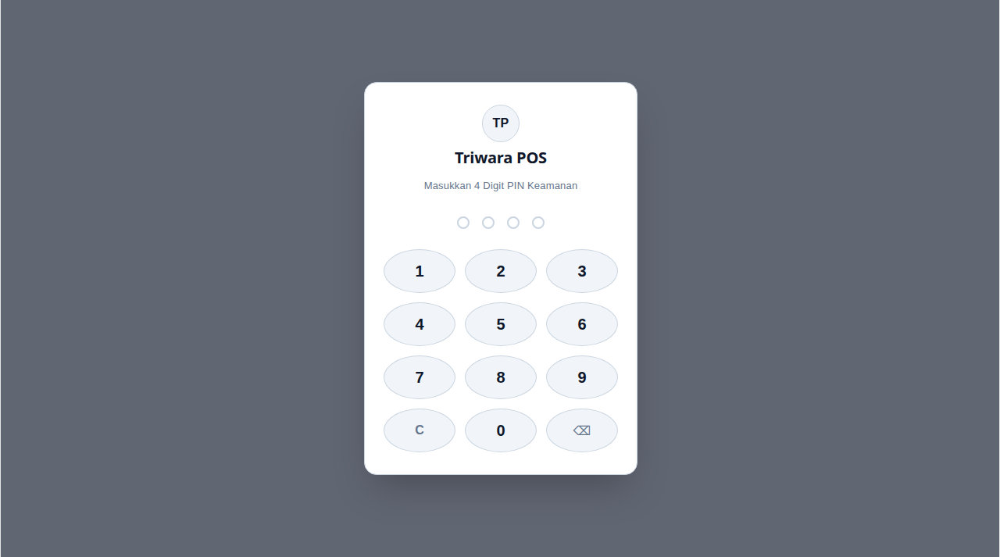
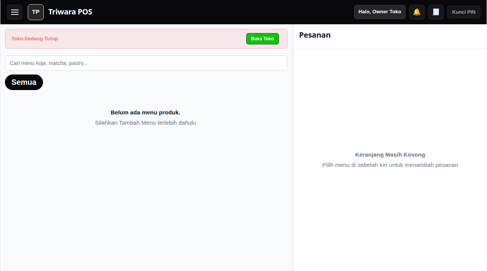
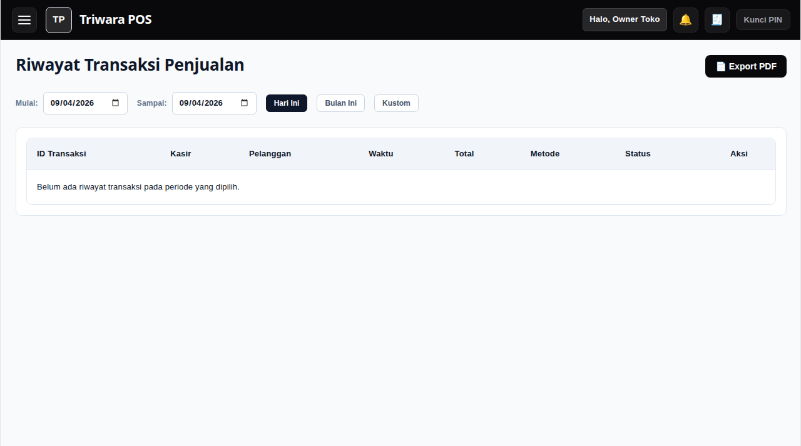
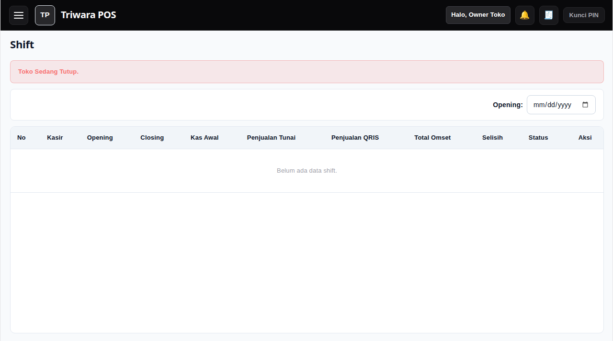
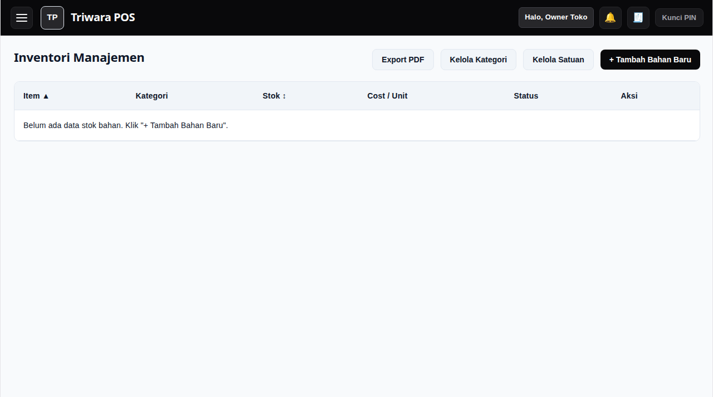
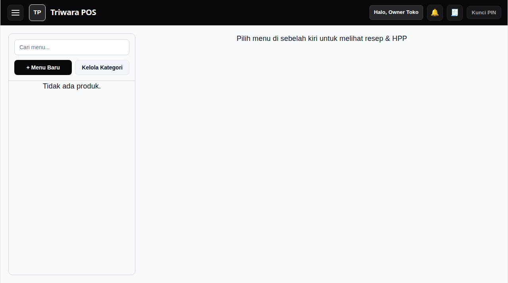
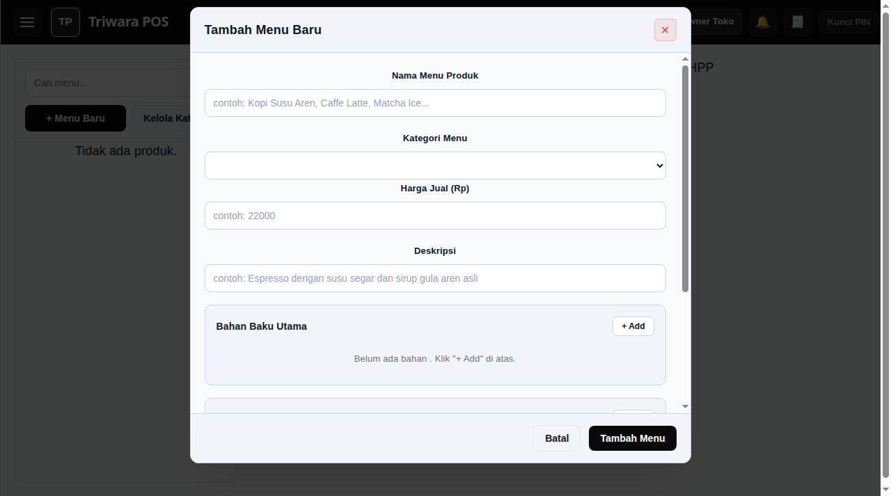
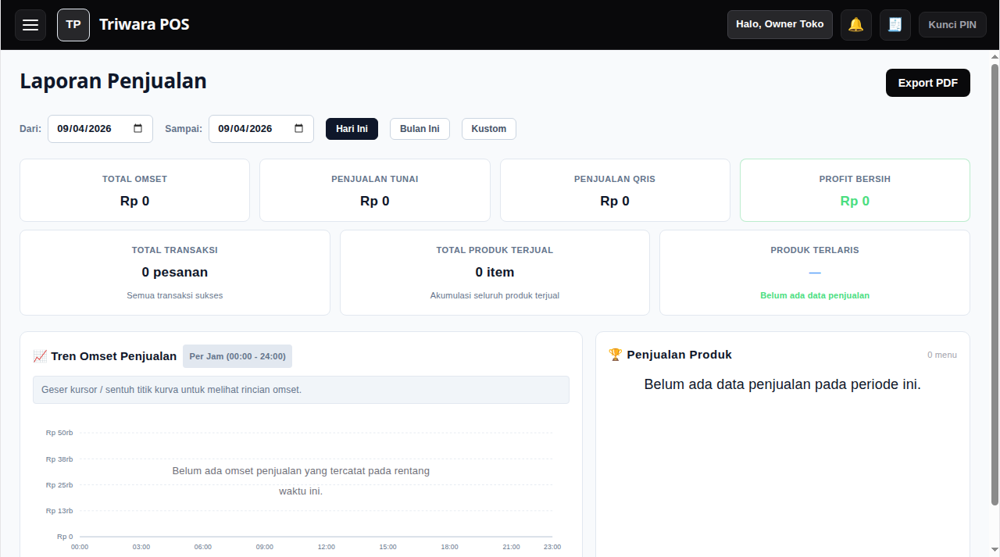
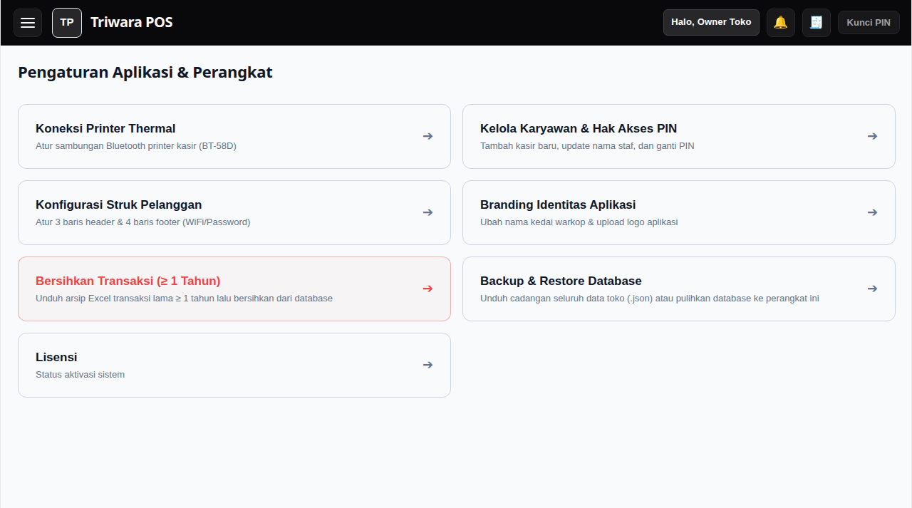
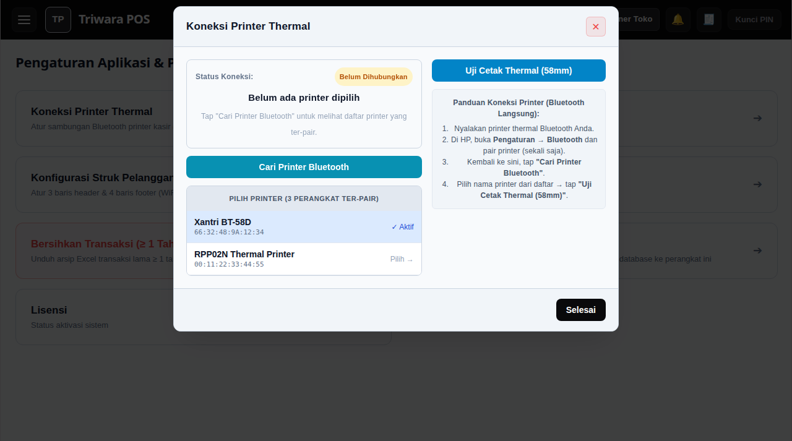

Buku Panduan Operasional Resmi
TRIWARA POS
Sistem Kasir, Stok Bahan & Perhitungan HPP Resep Otomatis
Panduan Lengkap untuk Pemula
Fitur Unggulan Triwara POS yang Memudahkan Usaha Anda:
- ✅ 100% Bebas Kuota (Offline-First)
- ✅ Hitung Kembalian & Cetak Struk 58mm
- ✅ Hitung Modal HPP Resep Otomatis
- ✅ Rekap Kas Shift & Deteksi Selisih Laci
- ✅ Pengurangan Stok Bahan Otomatis
- ✅ Laporan Penjualan & Ekspor Excel
DAFTAR ISI PANDUAN
Buku ini disusun secara berurutan mulai dari saat Anda pertama kali menyalakan aplikasi di pagi hari hingga tutup toko di malam hari.
- Bab 1: Menghidupkan Aplikasi & Masuk Menggunakan PIN Kasir Halaman 3
- Bab 2: Membuka Shift Kasir (Memasukkan Uang Modal Awal) Halaman 4
- Bab 3: Melayani Pesanan Pelanggan di Layar Kasir (POS) Halaman 5
- Bab 4: Memilih Varian Minuman (Es/Panas, Gula, & Topping) Halaman 6
- Bab 5: Pembayaran (Tunai / QRIS) & Mencetak Struk Kasir Halaman 7
- Bab 6: Fitur Menahan Pesanan Sementara (Pesanan Gantung) Halaman 8
- Bab 7: Riwayat Penjualan, Cetak Ulang Struk & Pembatalan (Void) Halaman 9
- Bab 8: Tutup Shift di Akhir Jam Kerja & Hitung Uang Kas Laci Halaman 10
- Bab 9: Mengatur Bahan Baku & Stok Gudang (Inventori) Halaman 11
- Bab 10: Menambah Menu Baru, Resep & Perhitungan HPP Otomatis Halaman 12
- Bab 11: Melihat Laporan Keuntungan & Pembukuan Toko Halaman 13
- Bab 12: Menghubungkan Printer Bluetooth (Thermal 58mm) Halaman 14
- Bab 13: Kelola Karyawan, Backup Data & Lisensi Toko Halaman 15
- Bab 14: Panduan Mengatasi Kendala Sehari-hari (FAQ & Solusi) Halaman 16
💡 Tips Membaca: Anda tidak perlu menghafal seluruh isi buku ini sekaligus. Cukup pelajari Bab 1 sampai Bab 5 terlebih dahulu untuk mulai melayani pembeli pertama Anda hari ini.
Aplikasi Triwara POS dilindungi oleh 4 angka PIN rahasia agar catatan penjualan kasir tidak tertukar dan pengaturan penting toko tetap aman.

Gambar 1: Layar Tombol Angka PIN Keamanan
1 Sentuh 4 Angka PIN Anda
Tekan tombol angka di layar satu per satu hingga 4 bulatan di atas terisi penuh. Aplikasi akan terbuka secara otomatis begitu angka ke-4 ditekan.
2 Jika Salah Tekan Angka
Tekan tombol panah hapus ⌫ di pojok kanan bawah untuk menghapus angka terakhir, atau tekan tombol C untuk mengulang dari awal.
🔑 Informasi PIN Bawaan Toko:
• PIN Pemilik Toko (Owner Pertama): 0000 (Nol empat kali).
• Pemilik toko dapat membuatkan PIN terpisah untuk setiap karyawan kasir di menu Kelola Karyawan.
Setiap kali memulai hari kerja atau pergantian petugas kasir, kasir wajib memasukkan jumlah uang modal kembalian yang ada di dalam laci.
1 Mengetik Jumlah Uang Modal di Laci
Ketika jendela "Buka Toko / Shift" muncul, ketikkan jumlah uang modal yang ada di laci kasir (misalnya Rp 100.000). Anda juga bisa langsung menyentuh tombol cepat 50.000, 100.000, atau 200.000.
2 Menekan Tombol Buka Shift
Tekan tombol Buka Toko. Sekarang layar kasir akan terbuka dan Anda siap melayani pelanggan yang datang.
⚠️ Mengapa Uang Modal Awal Harus Diisi?
Uang modal awal diperlukan agar saat tutup toko nanti, sistem dapat memisahkan antara uang modal kembalian dan uang murni hasil jualan, sehingga uang kas di laci tidak akan pernah selisih!
Layar kasir dibagi menjadi 2 bagian utama yang sangat jelas: Sisi Kiri untuk memilih menu, dan Sisi Kanan untuk melihat daftar belanjaan pelanggan.

Gambar 2: Layar Utama Kasir (Kiri: Menu Produk, Kanan: Keranjang Pesanan)
1 Memilih Menu yang Dipesan Pembeli
Cukup sentuh kotak menu yang diinginkan pelanggan (misalnya: *Kopi Susu Aren*). Menu tersebut akan langsung masuk ke keranjang di sebelah kanan.
2 Menggunakan Tombol Kategori & Pencarian
Jika menu sangat banyak, geser tombol kategori di atas (Kopi, Non-Kopi, Makanan) untuk menyaring menu dengan cepat, atau ketik nama minuman di kolom pencarian.
Saat pembeli memesan minuman dengan permintaan khusus (misal: dingin, sedikit gula, atau minta tambah topping), Anda dapat mengaturnya di jendela varian.

Gambar 3: Jendela Pilihan Varian Minuman & Tambahan Topping
1 Pilih Jenis Minum / Bungkus (Type)
Sentuh Dine-In jika pelanggan minum di warung, atau sentuh Takeaway jika dibungkus bawa pulang. (Kemasan takeaway otomatis memotong stok cup di gudang).
2 Pilih Suhu (Ice / Hot) & Gula (Sugar Level)
Sentuh tombol Ice untuk dingin atau Hot untuk panas. Kemudian pilih tingkat gula: Normal, Less Sugar (sedikit), atau No Sugar (tanpa gula).
3 Tambahan Topping (Additional)
Jika pelanggan meminta topping tambahan (seperti Extra Shot, Cincau, Jelly), centang kotak topping tersebut. Harga akan otomatis bertambah.
4 Masukkan ke Keranjang
Sentuh tombol hitam Tambah ke Keranjang di bagian paling bawah.
Setelah semua pesanan selesai dicatat di keranjang, kasir menekan tombol Bayar untuk menerima pembayaran pelanggan.

Gambar 4: Jendela Pembayaran (Hitung Kembalian Otomatis & QRIS)
1 Menekan Tombol Bayar Sekarang
Sentuh tombol hitam besar Bayar Sekarang di pojok kanan bawah keranjang belanja.
2 Jika Pelanggan Membayar TUNAI (Uang Kertas / Koin)
Sentuh tombol Tunai, lalu ketik jumlah uang yang diserahkan pembeli atau sentuh tombol cepat (Uang Pas, 50.000, 100.000).
👉 Lihat tulisan KEMBALIAN berwarna hijau di layar. Berikan uang kembalian tersebut kepada pembeli.
3 Jika Pelanggan Membayar QRIS (Scan Barcode)
Sentuh tombol QRIS. Tunjukkan barcode QRIS toko kepada pembeli. Setelah pembeli menunjukkan bukti transfer sukses di HP-nya, lanjutkan transaksi.
4 Cetak Struk Bukti Pembayaran
Sentuh tombol Selesaikan Pembayaran. Struk belanja akan langsung keluar terpotong rapi dari mesin printer Bluetooth kasir!
Gunakan fitur ini jika pembeli sedang memesan tetapi masih ingin melihat menu lain atau temannya belum datang, sementara antrean di belakangnya sudah menunggu.
1 Cara Menahan Pesanan Sementara
Di panel keranjang sebelah kanan, tekan tombol Tahan Pesanan. Masukkan nama pelanggan atau nomor meja (misal: "Mas Dimas" atau "Meja 03"). Keranjang akan kosong kembali sehingga Anda bisa langsung melayani pembeli berikutnya.
2 Cara Memanggil Kembali Pesanan Gantung
Ketika pelanggan tadi sudah siap bayar: Tekan tombol Pesanan Gantung di pojok kanan atas keranjang → Sentuh nama pelanggan tersebut → Pesanan lama akan kembali muncul utuh di keranjang untuk dibayar.
💡 Keuntungan Fitur Ini: Anda tidak perlu mengetik ulang pesanan dari awal jika pelanggan menambah pesanan di tengah jalan!
Menu ini digunakan untuk mengecek daftar nota penjualan hari ini, mencetak ulang struk yang hilang, atau membatalkan nota yang salah input.

Gambar 5: Layar Riwayat Transaksi & Detail Nota Penjualan
1 Membuka Riwayat Transaksi
Sentuh tombol menu garis tiga ☰ di pojok kiri atas layar → Sentuh "Riwayat Transaksi".
2 Cetak Ulang Struk (Reprint)
Sentuh salah satu nota penjualan di daftar → Tekan tombol Cetak Struk untuk mencetak kembali nota tersebut jika pelanggan memintanya.
3 Membatalkan Nota yang Salah (Void)
Jika ada pesanan salah ketik: Sentuh nota tersebut → Tekan tombol merah Batalkan Transaksi (Void) → Masukkan alasan pembatalan → Masukkan PIN Supervisor/Owner. Sistem akan otomatis membatalkan nota dan mengembalikan stok bahan baku ke gudang.
Di akhir jam kerja sebelum kasir pulang, kasir wajib melakukan Tutup Shift untuk mencocokkan uang fisik di laci dengan data penjualan komputer.

Gambar 6: Layar Rekapitulasi Shift & Ringkasan Penjualan
1 Membuka Menu Tutup Shift
Sentuh tombol menu ☰ → Sentuh "Shift" → Tekan tombol merah Tutup Shift.
2 Menghitung Uang Fisik di Laci
Keluarkan semua uang kertas dan koin di laci kasir, lalu hitung manual totalnya. Ketikkan jumlah uang nyata tersebut di kolom "Uang Kas Fisik Nyata di Laci".
3 Melihat Status Selisih Kas
Sistem akan otomatis membandingkan dan menampilkan status:
• PAS (Rp 0): Uang di laci tepat sesuai data transaksi.
• SURPLUS: Ada kelebihan uang di laci.
• MINUS: Ada kekurangan uang di laci.
4 Konfirmasi & Cetak Rekap Shift
Tekan Konfirmasi Tutup Shift. Printer akan mencetak struk rekapitulasi shift yang berisi total omset tunai, QRIS, dan nama kasir yang bertugas.
Menu Inventori mencatat seluruh bahan baku minuman (biji kopi, susu, sirup, bubuk) dan kemasan (cup, sedotan) agar Anda tahu kapan harus belanja ulang.

Gambar 7: Tabel Stok Bahan Baku, Satuan Gram/Ml, dan Batas Alert
1 Membuka Menu Bahan & Stok
Sentuh tombol menu ☰ → Sentuh folder "Produk & Stok" → Pilih "Bahan & Stok".
2 Memahami Warna Status Stok
• Hijau (Aman): Stok masih banyak.
• Kuning (Menipis): Stok sudah mendekati batas minimum, bersiaplah belanja.
• Merah (Habis): Bahan sudah habis di gudang!
3 Menambah Stok Belanjaan Baru (Restock)
Jika ada pasokan bahan baru datang dari supplier: Tekan tombol + Tambah Bahan atau sentuh nama bahan lalu tekan tombol Restock → Masukkan jumlah barang yang dibeli (misal: 1000 gram biji kopi) beserta total harga belinya.
Fitur paling canggih di Triwara POS! Anda cukup memasukkan takaran resep kopi, sistem akan menghitung modal per cangkir dan keuntungan bersih secara otomatis!

Gambar 8: Katalog Menu dengan Rincian HPP Dine-In, HPP Takeaway, & Margin

Gambar 9: Form Pembuatan Resep Menu (Takaran Bahan Baku & Kemasan)
1 Membuat Menu Baru
Sentuh tombol menu ☰ → Produk & Stok → Katalog Menu & Resep → Tekan tombol hitam + Menu Baru.
2 Mengisi Data Menu & Takaran Bahan
1. Masukkan Nama Menu (misal: Kopi Susu Aren) dan Harga Jual (misal: Rp 22.000).
2. Pada bagian Bahan Baku Utama, tekan + Add lalu pilih bahannya beserta takarannya (misal: Espresso 30 ml, Fresh Milk 120 ml, Gula Aren 20 ml).
3. Pada bagian Kemasan Takeaway, tambahkan cup dan sedotan (misal: Paper Cup 1 pcs, Sedotan 1 pcs).
✨ Keajaiban Hitung Modal (HPP) Otomatis:
Sistem akan langsung menghitung total biaya bahan: "Modal Minuman Rp 7.500 → Dijual Rp 22.000 → Untung Bersih Rp 14.500 (Margin 65%)". Anda tidak perlu repot menghitung manual di kalkulator lagi!
Pemilik toko dapat memantau grafik penjualan, mengetahui produk apa yang paling laris, dan mengunduh laporan keuangan ke file Excel.

Gambar 10: Grafik Omset Harian, Ringkasan Laba Bersih, & Produk Terlaris
1 Membuka Laporan Penjualan
Sentuh tombol menu ☰ → Sentuh "Laporan Penjualan". (Menu ini hanya bisa dibuka oleh Pemilik Toko dengan PIN Owner).
2 Membaca Ringkasan Angka Keuangan
• Total Omset: Total semua uang masuk dari penjualan.
• Total HPP Modal: Total uang modal bahan baku yang terpakai.
• Laba Kotor (Gross Profit): Keuntungan bersih toko setelah dikurangi modal bahan.
3 Download Laporan ke Excel (.xlsx)
Tekan tombol Unduh Excel di bagian atas laporan untuk menyimpan seluruh rincian penjualan ke dalam file spreadsheet yang bisa dibuka di HP, laptop, atau dikirim ke WhatsApp.
Triwara POS langsung terhubung ke printer struk thermal Bluetooth standar 58mm secara mandiri tanpa memerlukan aplikasi perantara seperti RawBT.

Gambar 11: Menu Pengaturan Toko & Konfigurasi Printer

Gambar 12: Jendela Pencarian & Pengujian Printer Bluetooth Thermal (58mm)
1 Nyalakan Printer & Sambungkan di Pengaturan HP/Tablet
1. Hidupkan printer thermal Bluetooth Anda dan pastikan kertas thermal terpasang.
2. Di HP/Tablet Android, buka Pengaturan → Bluetooth, cari nama printer thermal Anda, lalu lakukan Pairing (PIN pairing biasanya 0000 atau 1234).
2 Sambungkan di Aplikasi Triwara POS
1. Buka Triwara POS → Tekan menu ☰ → Pengaturan Toko.
2. Sentuh kartu "Koneksi Printer Thermal".
3. Tekan tombol biru Cari Printer Bluetooth.
4. Sentuh nama printer Anda pada daftar perangkat (misal: Xantri BT-58D atau RPP02N) hingga muncul tulisan ✓ Aktif.
5. Tekan tombol Uji Cetak Thermal (58mm) untuk mencoba cetak.
Menu khusus Pemilik Toko untuk menjaga keamanan data usaha dan mengelola akun staf kasir.
1 Kelola Karyawan & Ganti PIN
Buka Pengaturan Toko → Kelola Karyawan. Anda dapat menambahkan nama kasir baru dengan PIN 4 digit khusus mereka masing-masing, atau mengubah PIN jika ada kasir yang lupa.
2 Cadangkan Data Toko (Backup Database)
Buka Pengaturan Toko → Backup & Restore Database → Tekan Unduh Cadangan (.json). File cadangan ini berisi seluruh data produk, resep, transaksi, dan inventori. Sangat disarankan untuk mengunduh backup seminggu sekali untuk disimpan di memori HP atau Google Drive.
3 Mengganti Perangkat HP / Tablet Baru (Restore)
Jika Anda membeli tablet kasir baru, pasang aplikasi Triwara POS lalu buka menu Restore → Pilih file backup .json yang tadi disimpan → Seluruh data toko akan kembali persis seperti semula dalam hitungan detik!
Solusi cepat dan praktis jika Anda menemui kendala saat menggunakan aplikasi di kasir.
❓ Printer thermal tidak mau mencetak struk?
1. Pastikan lampu printer menyala dan kertas struk tidak terpasang terbalik (sisi licin menghadap ke pemanas).
2. Pastikan Bluetooth HP/Tablet menyala.
3. Buka menu Pengaturan Toko → Koneksi Printer Thermal, tekan "Cari Printer Bluetooth" lalu pilih printer Anda sampai berstatus ✓ Aktif.
❓ Kasir salah memasukkan harga atau salah menu saat bayar?
Jangan panik! Buka menu Riwayat Transaksi → Sentuh transaksi yang salah tersebut → Tekan tombol merah Batalkan Transaksi (Void) → Masukkan PIN Owner. Transaksi akan dibatalkan dan kasir dapat membuat pesanan baru yang benar.
❓ Apakah aplikasi bisa dipakai saat mati lampu / tidak ada internet?
BISA 100%! Aplikasi Triwara POS bekerja secara mandiri (*Offline-First*). Anda tidak memerlukan WiFi atau kuota data internet sama sekali untuk melayani pelanggan, mencatat stok, maupun mencetak struk.
❓ Lupa PIN Kasir atau PIN Supervisor?
Masuklah menggunakan akun Owner (PIN Pemilik). Buka Pengaturan Toko → Kelola Karyawan, lalu ubah PIN kasir yang terlupa tersebut menjadi angka baru.
🌟 Selamat Menggunakan Triwara POS! 🌟
Semoga usaha kedai warkop & F&B Anda semakin lancar, rapi, dan berkembang sukses!